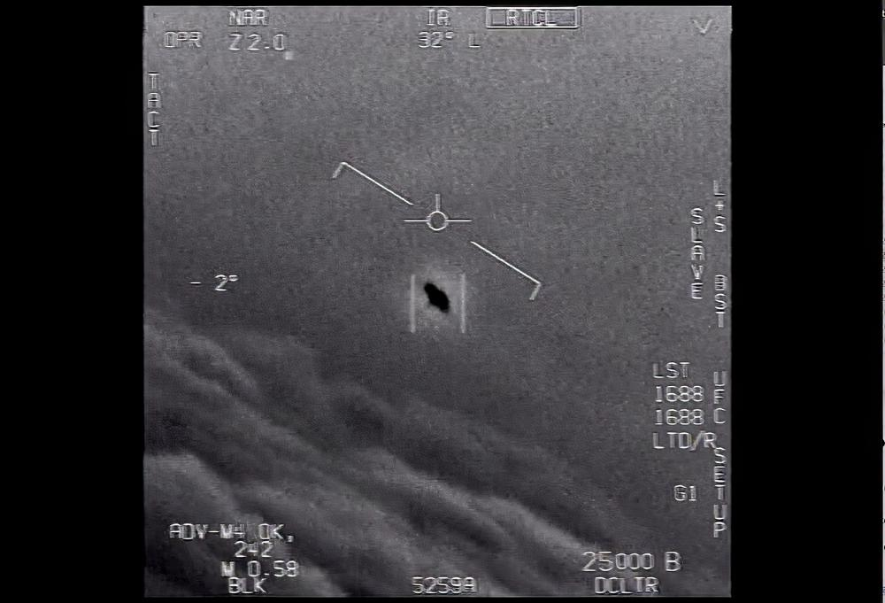
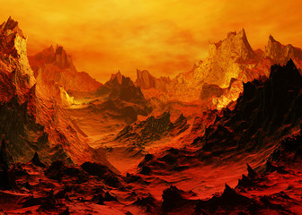

Czy tak jak ja, budzicie się w trakcie nocy czując, że ktoś was obserwuje? I czy tak jak ja, macie dość rządu, który na każdym kroku stara się zataić OCZYWISTE dowody na istnienie, a nawet INGERENCJĘ marsjan w nasze życie?
Już dzisiaj zapraszam was na marsz #SZARAKI, na którym pokażemy, że MY WIEMY.

UFO!!
Czy dusze potępione lądują na Wenus?
Czy wiecie jakie warunki panują na Wenus? Temperatura dochodząca do tysięcy stopni cejslusza, zewsząd socząca się lawa, zapach i smak siarki na każdym kroku. Czy coś wam to przypomina? Tak, dobre skojarzenie! Otóż na Wenus znajduje się PIEKŁO, dlatego zbieramy fundusze na misje kosmiczną, w której dowiedziemy jego istnienie, a tym samym na istnienie Boga. Dołóż się już dzisiaj.

Piekło
Top 3 planety
Mam wyniki konkursu na najlepsze 3 planety układu słonecznego wybrane przez naszych czytalników. Wyniki mogą was zaskoczyć!
Ostatnie miejsce na podium zajął Neptun - planeta na cześć boga mórz i oceanów. Oto parę ciekawych faktów na jego temat z wikipedii:
gazowy olbrzym, ósma, najdalsza od Słońca planeta w Układzie Słonecznym, czwarta pod względem średnicy i trzecia pod względem masy. Neptun jest ponad 17 razy masywniejszy od Ziemi i trochę masywniejszy od swojego bliźniaka, Urana, który ma masę prawie 15 razy większą od masy Ziemi[b]. Krąży wokół Słońca w odległości około 30 razy większej niż dystans Ziemia-Słońce. Nazwa pochodzi od rzymskiego boga mórz Neptuna. Jego symbol astronomiczny to Neptune symbol.svg, stylizowany trójząb Neptuna.